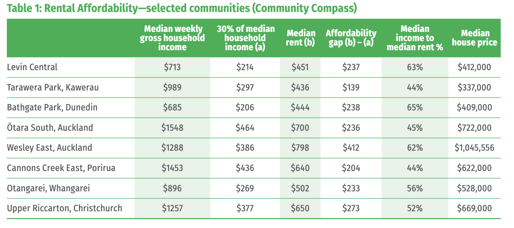

100,000 Strong: Workers Rise Up as NZ's Wealthy Elite Ignore the Real Cost of Living
Yesterday's mega-strike was a cry for fairness, not greed – and it's long overdue

Wellington, 24 October 2025 - Yesterday, over 100,000 New Zealand workers walked off the job in what may be the largest industrial action in more than 40 years. Teachers, nurses, doctors, and countless other essential workers stood together with a simple message: enough is enough.
Yet predictably, the government and their wealthy backers have dismissed these workers as "politically motivated" troublemakers. Public Service Minister Judith Collins called the strikes "unwarranted and unjustified." Public Service Commissioner Sir Brian Roche – who conveniently took a holiday on strike day – suggested workers should be grateful for offers below inflation.
Let's be brutally clear about what's really happening: New Zealand's working people are being systematically squeezed by a rigged system that benefits the ultra-wealthy while everyone else treads water or drowns.
The Wage Lie
The Public Service Association called out pay offers of 2% followed by 1.5% over 30 months – offers that are "effectively pay cuts during a cost-of-living crisis," as the PSA put it. With inflation at 2.7% and food prices up 4.1% annually, these aren't raises. They're insults.
Wages rose just 4.2% in the December 2024 quarter, barely outpacing inflation. But even that modest figure masks a harsher reality: wage growth has been cooling, sitting at just 2.4% in May 2025, actually trailing inflation.
💰 The Pay Cut Reality
- Government Offer: 2% then 1.5% over 30 months
- Current Inflation: 2.7%
- Food Price Inflation: 4.1% annually
- Wage Growth (May 2025): 2.4% (trailing inflation)
- Real Result: Workers getting poorer every year
When government ministers call workers greedy for asking for wage increases that match inflation, they're essentially arguing that essential workers should accept getting poorer every year. That nurses saving lives, teachers shaping futures, and firefighters running into burning buildings should smile and accept less purchasing power year after year.
That's not fiscal responsibility. That's class warfare.
The Housing Catastrophe: How the Wealthy Locked Out a Generation
The disconnect between wages and wealth has never been more stark than in housing. And this is where the inter-generational theft becomes undeniable.
In the 1960s, government subsidies were equivalent to a third of the average house price in New Zealand. In 1966, the median house cost about $159,000 in today's dollars, with average household income around $51,000. It was cheaper to buy than to rent.
Today? The median house across New Zealand costs $820,000, and the housing affordability ratio hit 6.8 times household income as of May 2023, peaking at 8.3 times in May 2021.
🏠 Housing Affordability Crisis
Let that sink in: Australia and New Zealand have the highest ratio of income to house price in the OECD, and it's considered "severely unaffordable" internationally.
Someone buying a house in 1995 needed a household income of $66,812 in today's dollars. Now it's $132,863 – exactly double. But wages haven't doubled. Not even close.
The dream of buying a home on a single income in 1-2 years? That's a fantasy from another era. Today, it takes a decade or more of saving for most workers – if they can save at all after rent, food, and the basics.
The Wealth Hoarders
While workers are told there's no money for fair pay, New Zealand's wealthiest are doing just fine. Better than fine.
The top 1% of the population owns 16% of the country's wealth, while the richest 5% owns 38%. Meanwhile, half the population, including beneficiaries and pensioners, earn less than $24,000.
📊 The Wealth Gap
| Group | Wealth/Income |
|---|---|
| Top 1% | 16% of total wealth |
| Top 5% | 38% of total wealth |
| Richest 20% | +$386K (2021-2024) |
| Bottom 40% | No significant change |
| Poorest 20% | Median: $11,000 |
The wealthiest 20% of households increased their wealth by 19% between 2021 and 2024 – gaining $386,000 to reach a median of $2.4 million. This layer holds around two-thirds of New Zealand's total household wealth.
For the bottom 40%? No statistically significant change. The poorest 20% of households own a median of just $11,000 in assets.
Between 1982 and 2011, the average income of the top 10% of earners almost doubled from $56,300 to $100,200. The average income of the poorest tenth increased by just 13%, from $9,700 to $11,000.
This isn't economics. This is extraction.
The Real Greed
So when nurses who work double shifts because of dangerous understaffing ask for wages that keep pace with inflation – who's being greedy?
When teachers educating our children in crumbling schools with outdated resources request fair pay – who's being unreasonable?
When firefighters, who already held their own strike on October 17, say Fire and Emergency is "in a dire emergency" – who's causing disruption?
💸 Budget Priorities: An extra $12 billion has been allocated to the armed forces over four years, while education received just $2.5 billion extra over four years. We have money for weapons but not for workers.
New Zealand is "developing a society of those with assets and those without assets, and those without assets are growing much faster", as researcher Charles Waldegrave put it. We're creating a permanent underclass locked out of wealth accumulation.
Stand With Workers
62% of nursing students surveyed in July were considering moving overseas, joining a record net migration loss of 47,900 New Zealanders in August. They're voting with their feet because they can't afford to stay.
The strikers aren't asking for champagne and caviar. They're asking to afford rent, groceries, and maybe – just maybe – to save for a future that includes home ownership like their grandparents had.
That's not greed. That's dignity.
When government ministers condemn workers for striking while wealth concentrates at the top at unprecedented rates, they reveal whose side they're really on. It's not yours. It's not the nurse working a 16-hour shift. It's not the teacher buying classroom supplies out of their own pocket.
Yesterday's mega-strike should be a wake-up call. Workers are demanding pay rises equal to or slightly above inflation – which would still effectively maintain their current standard of living, not improve it.
If that's too much to ask in a country where the wealthiest added $386,000 to their fortunes in three years, then the system is fundamentally broken.
The question isn't whether workers are being greedy. The question is: how much longer will we tolerate a system designed to enrich the few at the expense of the many?
Workers built this country. It's time the country worked for them.